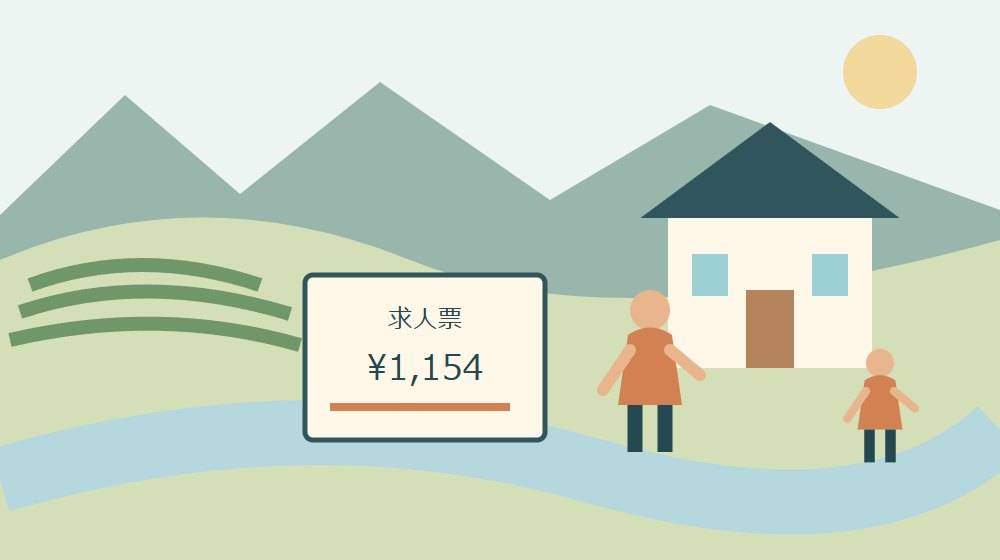

移住・暮らし・データ
森町の仕事探し｜10月の最低賃金改定を確認

Q. 森町で働くなら、10月から時給はいくらを確認すればいい？
A. 静岡労働局は、静岡県最低賃金を2026年10月15日から時間額1,154円に改定すると発表しています。改定前は1,097円です。最低賃金は求人の平均時給や手取り額ではありません。今日は候補の求人票を一枚開き、時給と実際に働く時間、改定後の条件を一組で確認してください。
森町で働く人と、仕事をつくる人の負担を考える
森町の暮らしは、職場へ通う人、店や工場を動かす人、家族の送迎を担う人の日々の調整で成り立っています。雇う側にも、仕事量や人員を見ながら賃金を用意する負担があります。移住後の仕事を考えるときは、その努力を踏まえて、自分の生活が続く条件を確かめたいと思います。
大石浩之（磐田市／不動産業）です。家を探すとき、月々の住居費を決めるには収入の見通しが要ります。ただ、求人票の大きな時給表示だけでは、家族の家計にいくら入るかは分かりません。2026年9月20日のこの記事では、10月の改定を仕事探しの確認材料にします。
今日の一歩は、候補の求人票を一枚開き、時給と勤務時間を一組で見ることです。応募先を今日決める必要はありません。最低賃金の発効日を確かめたうえで、予定する働き方では何時間働けるのかをそろえれば、住まいの予算を考える土台ができます。
森町内の求人件数や平均時給をこの記事で推定することはしません。職種、経験、勤務場所によって募集条件は異なり、掲載中の求人も変わります。ここで扱う1,154円は県の最低賃金であり、「森町ならこの時給で必ず採用される」という約束ではありません。
発効日は10月15日、時間額は1,154円
静岡労働局は、2026年9月4日付の発表で、静岡県最低賃金を時間額1,154円へ改定するとしています。発効日は2026年10月15日です。改定前の時間額は1,097円で、差額は57円。掲載本文を2026年9月20日に確認しました。
10月の改定と聞くと、10月1日から切り替わると思いやすいのですが、発効日は月の途中です。求人票や勤務条件を見るときは、10月15日の前後を分けます。「10月の給与」とだけ聞くより、どの期間に働いた分を、どの時給で計算するかと聞く方が具体的です。
静岡労働局は県内の事業場で働く労働者への適用を説明しています。森町に住むという住所だけで、勤務先の条件を判断する話ではありません。町外へ通う場合や、雇用される仕事と業務委託を比べる場合は、働く場所と契約の形も分けて確認してください。
最低賃金は、求人全体の平均でも、その家庭の手取り額でもありません。数字の役割を取り違えると、比較の出発点がずれます。1,154円という発表を読んだら、まず発効日と勤務先の説明を照合し、個別の条件は求人票や契約時の資料で確認します。

森町の公式ページから、求人を探す入口を選ぶ
森町の「就職支援」ページには、ハローワークインターネットサービス、しずおか就職net、移住・就業支援金求人サイトなどへの案内があります。町が紹介する入口を使い、条件の異なる求人を同じ項目で比較する準備ができます。求人への応募は、リンク先の現行案内を確認して進めます。
森町の「移住定住手続き」は、移住の目的、家族の考え、優先条件、住まい探しと仕事探しを整理しています。仕事探しでは、しずおか就職netやハローワークのサービス等を挙げています。町の移住案内と、個々の募集条件を記載する求人票は、役割の異なる資料です。
候補を探す際は、勤務地を会社の本社所在地と混同しないようにします。実際に通う就業場所がどこか、配属によって変わる可能性があるかを見ます。森町の家から通えると考えた求人でも、確認すべき場所が別なら、通勤時間と交通費の見積りが変わります。
検索した日と求人番号を残しておくと、問い合わせる際に同じ募集を示せます。画面の保存だけでなく、更新日や募集が続いているかも確認します。求人の入口を紹介した町のページが見られることと、その求人が現在も募集中であることは、別々の確認です。
時給と働く時間を、一枚の紙で組み合わせる
求人の収入比較では、時給、1日に賃金計算の対象になる時間、月の勤務日数をそろえます。休憩を含む職場の滞在時間を、そのまま時給に掛けないようにします。どの時間を賃金計算へ入れるかは、求人票と勤務先の説明で確かめる項目です。
仮に時給1,154円、1日5時間、月16日働く条件なら、1,154円×5時間×16日で92,320円です。これは比較のために置いた控除前の計算例です。実在求人の提示額ではなく、手当、残業、欠勤、税や社会保険等を反映した手取り額でもありません。
同じ仮定の80時間に改定前の1,097円を掛けると87,760円で、差は4,560円になります。57円という時間当たりの差を、家庭が比較しやすい月の規模へ戻した計算です。ただし、すでに最低賃金を上回る時給の人が、必ず57円上がるという意味ではありません。
勤務日数が12日になれば、同じ時給と1日5時間でも60時間となり、控除前の計算は69,240円です。時給が同じでも、働く日数で収入の見通しは変わります。私は、求人を並べるときに、いちばん高い時給より先に、継続して入れる日数を確認したいと考えます。
比較表には、確定している時間と、本人が希望している時間を別に書きます。「週に4日働きたい」という希望が、そのまま採用後の保証になるわけではありません。シフトの決め方、繁忙期とそれ以外の差、最低限見込める勤務の範囲を、応募前後の説明で聞いてください。
手取りと支払日が分かるまで、住居費を決め切らない
移住後の家計では、控除前の給与計算と実際に使えるお金を分けます。税や社会保険の扱いは世帯や勤務条件によって確認事項が異なります。この記事の計算例を手取り表として使わず、雇用条件をそろえて勤務先や各担当窓口へ確認してください。
給与の締日と支払日も、引越し前に確認したい項目です。仕事を始める日と最初の給与が入る日は同じとは限りません。家賃、引越し代、通勤準備などをいつ払うかを予定表に入れれば、月収の見積りが合っていても、入金まで資金が足りないという問題を見つけられます。
賞与や残業代は、基本の収入と分けて書くことを私は勧めます。募集条件で確定できない額を、毎月必ず入るお金として家賃に充てないためです。金額が未確認なら、ゼロと断定せず「条件を聞く」と記録します。比較表の空欄は、次の質問を見つける場所です。
移住に伴う支援金も、勤務先から継続して受け取る給与と別欄にします。森町の移住・就業支援補助金を整理した記事を参考に、適用条件は町へ確認してください。支給を見込んだ金額を毎月の収入へ足して、生活費を決める方法は避けたいと思います。
通勤の移動時間は、家族の予定に戻して考える
森町での勤務を考えるなら、候補の住まいから実際の就業場所までの移動を確認します。地図の距離だけでなく、始業に間に合う出発時刻、帰宅予定、駐車場所や駅からの移動を見ます。通勤時間を賃金の時間と混ぜず、生活の時間として別に数えます。
車を使う場合は、燃料費だけでなく、駐車場や車を維持する費用も家庭の予算へ入れます。通勤手当がある場合も、実際の支出のどこまでをカバーするかを勤務先へ尋ねます。手当の名前だけで、移動の負担がなくなると判断しないようにします。
家族の送迎や買物がある家庭では、勤務の終了時刻が帰宅時刻ではありません。職場から園や学校へ寄る予定、車を家族で共用する条件、急な迎えが必要な日の連絡先を整理します。今日の小さな一歩は、候補の求人一つについて、出勤する日の移動を一往復だけ書くことです。
移動の試し方は、森町で日常の移動を試す記事でも扱っています。休日の見学で走りやすかった道が、勤務日の予定にも合うかを別に確かめます。町の担い手や家族に無理な送迎を頼む前提にしないことが、働き続ける条件になると私は考えます。
良い点：発効日と金額が、求人を確かめる共通の目印になる
静岡県最低賃金の発効日と金額が公表されていることで、求職者と雇用側が同じ資料を見て条件を確認できます。私は、給与の話を感覚だけで進めず、具体的な日付と時間額に戻せる点を評価します。求人票の記載に疑問があれば、根拠を示して質問できます。
森町の就職支援ページが複数の情報源を案内していることも、探し始める人の助けになります。一つの求人だけで町内の仕事全体を決めつけず、職種や時間の条件を変えて調べられます。募集の有無や採用の判断まで町が保証しているわけではない点は、区別して利用します。
雇う側が条件を分かりやすく示すことは、応募する人の時間を守ることにもつながると思います。時給、勤務時間、就業場所、改定後の扱いが読めれば、入社後の行き違いを減らす準備ができます。これは事業者として私自身も意識したい、説明の基本です。
収入を確認することは、森町の暮らしを金額だけで評価することではありません。続けられる条件が見えれば、仕事や地域との関わりを落ち着いて選べます。森町暮らしの三つの条件を考える記事と合わせ、住まい、仕事、生活の優先順位を家族でそろえます。
注文したい点：時給の見出しだけでは、暮らしは組めない
求人情報について私が望むのは、時給と勤務時間を離さず読めることです。高い時間額が目に入っても、希望する日数が確保できるか分からなければ、家賃を払う計画は組めません。働き手を確保したい側も、どんな勤務を想定しているかまで具体的に示してほしいと思います。
改定前に出た求人票では、10月15日以降の条件を質問する余地があります。古い表示だけを見て違反と決めつけたり、改定後は自動的に希望額になると想定したりしません。今日できる行動は、「採用予定日以降の時給を教えてください」という一文を質問欄へ書くことです。
担い手が足りない職場であっても、家族の時間を無限に使えるわけではありません。勤務を増やせるか考える際は、誰が送迎や家事を引き受けるかまで確認します。勤務日を一日増やす提案と、その日の家庭側の負担を一緒に話すことが、無理な合意を避ける方法だと考えます。
応募前にすべてが分かるとは限りません。面接で聞く項目、採用時の書面で確認する項目、実際に働き始めて確かめる項目を分けます。制度の適用に疑問がある場合は、求人担当者の説明だけで結論を出さず、労働局等の公式相談先へ確認してください。

対案・結論：求人票一枚に、時間と日付を添える
森町での仕事探しを今日進めるなら、求人票一枚に、確認日、採用予定日、時給、1日の勤務時間、月の勤務日数を書き添えます。まだ決まっていない項目は未確認とします。求人を十件集める前に、一件を同じ単位で説明できるようにする提案です。
質問は、10月15日以降の時給、休憩を除く勤務時間、勤務日数の決め方の順にまとめます。相手が回答しやすいよう、求人番号と見ている募集の掲載先も添えます。「だいたい月にいくらですか」と聞くだけより、計算に使った条件を共有しやすくなります。
回答がそろったら、時給と時間を掛けた控除前の試算を作ります。その横に、手当と控除の未確認事項、通勤にかかる費用、最初の入金予定を書きます。家族に見せる時も、計算例の金額と採用条件として提示された金額を混ぜないよう、欄を分けてください。
仕事が決まるまで住まいの契約をどうするかは、各家庭の資金と予定によります。私は、最低賃金の改定だけを理由に借入れや家賃の上限を引き上げることは勧めません。収入の根拠と勤務時間がそろってから、継続して払える住居費を考えたいと思います。
家族に残す記録：給与と移動を別々の欄にする
移住後の仕事の記録には、募集名、勤務場所、問い合わせ先、確認日、回答内容を残します。給与に関する欄と、通勤や家族の送迎に関する欄を分けると、誰に何を確認するかが明確になります。求人情報の保存は、契約条件が確定した証拠と混同しないようにします。
家族が相談する際は、採用された場合の一週間を仮に描きます。出勤、帰宅、通院、買物などの予定を置き、重なる時間を探します。全員が予定通り動ける一週間だけでなく、一人が動けない日も想定しておくと、頼る相手や代替手段の確認につながります。
雇用契約や給与の資料には個人情報が含まれます。移住相談で収入の見通しを伝える際も、必要な項目だけを共有します。書類一式を広く送る前に、何の目的でどの資料が必要かを確認してください。家族用の予算表と、外部への提出資料は分けて保管できます。
大石の視点：57円を、続けられる一か月へ戻す
私は、57円という改定幅を見たら、何時間働く家庭の、いくらの変化なのかまで戻して考えます。80時間なら4,560円という計算はできますが、その80時間を継続できるかは求人票の数字だけでは決まりません。数字を家計に翻訳するには、時間と移動の裏付けが要ります。
時給が上がることと、暮らしが自動的に楽になることは同じではありません。これが今回、私が言い切りたい点です。通勤の維持費や家族の担う時間も確認して初めて、住まいに回せる予算が見えます。町の働き手と雇用側の努力を、ひとつの時間額だけで評価したくありません。
一方で、確認事項を増やすほど、仕事を探し始めた人の足を止めるのではないかという迷いもあります。だから最初は求人票一枚です。今日、時給と勤務時間の一組を確認し、分からない項目を一つ質問にする。森町へ移るかの結論より先に、確かな材料を増やします。
よくある質問
2026年10月1日から1,154円になりますか？
静岡労働局が発表した発効日は2026年10月15日です。10月1日からではありません。同じ10月でも改定前後を分けて確認します。月末などの給与支給日だけで判断せず、働いた期間と改定後の時給を勤務先へ聞いてください。求人票の掲載日が古い場合は、採用時に提示される条件も改めて確認します。
最低賃金が上がれば、月の手取りも同額だけ増えますか？
時間額の改定だけでは、個別の月収や手取りの増加額は決まりません。実際の時給、働く時間と日数、手当、控除などの条件が関係します。記事の時給×時間の計算は、比較用の控除前試算です。候補の求人票と勤務先の説明で条件をそろえ、税や社会保険の扱いはそれぞれの担当窓口へ確認してください。
移住・就業支援金を毎月の収入に足して考えてよいですか？
移住・就業支援金と勤務先からの継続的な給与は分けて考えます。支援金には対象者や就業方法などの要件があり、求人への応募だけで受給が決まるものではありません。家賃や生活費は、まず勤務条件に基づく毎月の収入で比較します。支援金は町へ適用と入金時期を確認できてから、別欄の資金として扱います。

公式情報源
2026年9月20日確認。制度・数値は変更される場合があります。個別の適用は担当窓口へ、税務・契約等の判断は専門家へ確認してください。